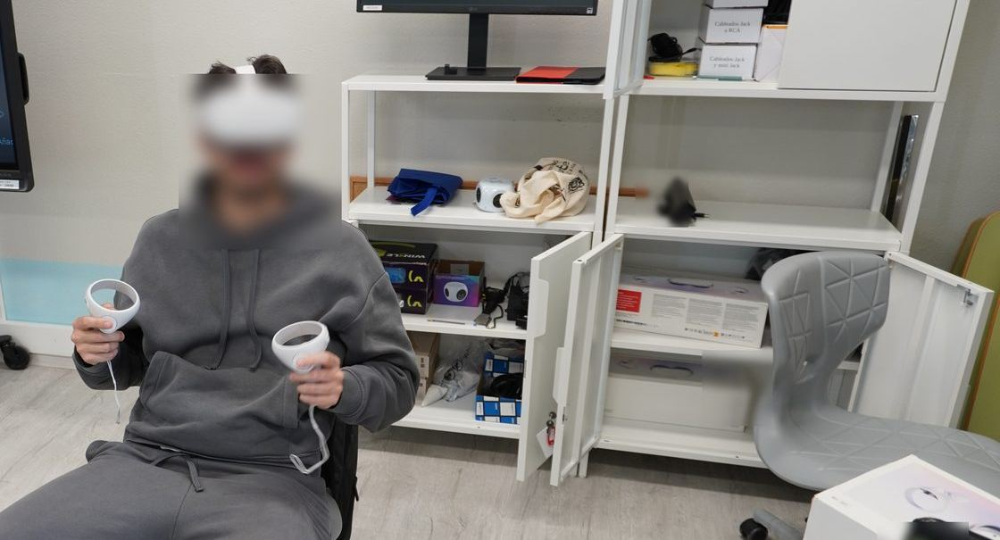

AR / VR (gafas) · Aula ATECA
Realidad virtual y aumentada
Qué son, en qué se diferencian y qué podemos hacer con ellas en clase, en cualquier familia profesional.
La realidad virtual (VR) y la realidad aumentada (AR) son dos formas de mezclar lo digital con lo que vemos, pero funcionan al revés: la VR nos saca del aula y nos mete en otro lugar; la AR deja el aula donde está y le añade información encima. En el Aula ATECA tenemos equipo para las dos.
¿Qué es la realidad virtual?
Con unas gafas de VR la persona deja de ver el aula y pasa a estar dentro de un entorno generado por ordenador: un taller, un aerogenerador a 80 m de altura, un quirófano o una planta industrial. Las gafas siguen el movimiento de la cabeza y de las manos (seis grados de libertad), así que se puede caminar, girarse, coger objetos y usar herramientas como en la realidad.
Qué se puede hacer con ella en clase:
- Practicar procedimientos peligrosos o caros sin riesgo y sin gastar material: maniobras en altura, uso de extintores, maquinaria de carpintería, montajes eléctricos.
- Visitar lugares a los que no se puede ir: empresas del sector, destinos turísticos, museos, el interior del cuerpo humano.
- Repetir tantas veces como haga falta un mismo ejercicio, con el simulador corrigiendo cada intento.
- Entrenar habilidades blandas: entrevistas de trabajo, atención al cliente o gestión de conflictos con personajes virtuales.
En el aula usamos las Meta Quest 2, gafas autónomas que no necesitan ordenador. Para simuladores más exigentes, como SimulWind, se conectan a un PC.
¿Qué es la realidad aumentada?
La AR superpone contenido digital sobre el mundo real a través de la cámara de una tablet o un móvil (o del passthrough de unas gafas). El contenido se "ancla" a algo que la cámara reconoce:
| Tipo de anclaje | Qué reconoce la cámara | Ejemplo en el aula |
|---|---|---|
| Imagen o marcador | Una foto, un cartel, la página de un libro | Un póster que, al enfocarlo, muestra el motor en 3D |
| Superficie | El suelo o una mesa | Colocar una máquina a tamaño real sobre la mesa del taller |
| Espacio | Un entorno escaneado previamente | Instrucciones de mantenimiento flotando junto a cada equipo de una sala |
| Geolocalización | La posición GPS | Una ruta turística con contenido en cada parada |
Qué se puede hacer con ella en clase:
- Ver en 3D lo que el libro muestra en 2D: órganos, piezas mecánicas, moléculas, edificios.
- Medir y orientarse con la cámara: distancias, ángulos, áreas.
- Crear materiales propios: carteles, fichas o maquetas que "cobran vida" al enfocarlos, diseñados por el propio alumnado con Onirix Studio.
Para AR usamos las tablets Samsung Galaxy Tab A 10.1 del aula y los móviles del alumnado.
Qué podemos usar en clase
Las 6 gafas del aula comparten una única cuenta Meta del centro (el porqué está explicado en el manual de las Quest 2). Eso condiciona qué contenidos funcionan en todas las gafas a la vez:
| Tipo de contenido | Origen | ¿Las 6 gafas a la vez? |
|---|---|---|
| APK | itch.io, GitHub, web del desarrollador, SideQuest | ✅ Normalmente sí |
| WebXR | Navegador de las gafas (Meta Quest Browser) | ✅ Sí, sin instalar nada |
| Vídeos 360° | Copiados a las gafas con ADB | ✅ Sí |
| Apps de la tienda de Meta | Meta Horizon Store | ❌ Solo en una gafa a la vez |
| Experiencias WebAR | Navegador de la tablet o el móvil (Onirix) | ✅ Sí, con un enlace o un QR |
Límite de la cuenta única
Una misma cuenta no puede abrir la misma app de la tienda de Meta en varias gafas a la vez (pasa también con muchas apps gratuitas). Las APK instaladas a mano y las experiencias web normalmente no tienen esa comprobación. Si una app imprescindible de la tienda se bloquea, la solución es crear cuentas separadas solo para esa actividad.
Apps de AR para las tablets
Medición y orientación (Energía y Agua, Edificación, Instalaciones)
- AR Ruler – distancias, áreas y volúmenes.
- Transportador de ángulos AR – medición de ángulos.
- Brújula AR – orientación y navegación.
Anatomía (Sanidad)
- Anatomy 4D – cuerpo humano en 4D.
- AR Human Organs – órganos humanos en 3D.
- Essential Skeleton 3D – esqueleto interactivo.
- The Brain in 3D – cerebro humano en 3D.
- Anatomyou – endoscopio virtual.
Antes de la clase con tablets
Instala las apps el día anterior (descargan modelos 3D pesados), carga las tablets (la cámara y la GPU gastan mucha batería) y prepara una superficie plana y bien iluminada. Al abrir la app, explica al alumnado que mueva despacio la tablet unos segundos para que reconozca el entorno.
Ideas por familia profesional
- Seguridad y Medio Ambiente: simulacros de incendio o evacuación imposibles de reproducir en el centro (inspirado en proyectos como INNOFIRE-VR).
- Energía y Agua: mantenimiento de aerogeneradores con SimulWind y visitas virtuales a instalaciones.
- Sanidad: anatomía en 3D con las tablets y primeros auxilios en VR.
- Hostelería y Turismo: vídeos 360° como "excursión virtual" antes de una FCT y rutas turísticas en AR creadas por el alumnado.
- Administración y Gestión: entrevistas de trabajo y atención al cliente simuladas.
- Informática y Comunicaciones: crear experiencias WebAR con Onirix y escenas WebXR propias.
Tienes un catálogo completo en Apps VR gratuitas por familia profesional.
Para saber más
Realidad virtual (VR)